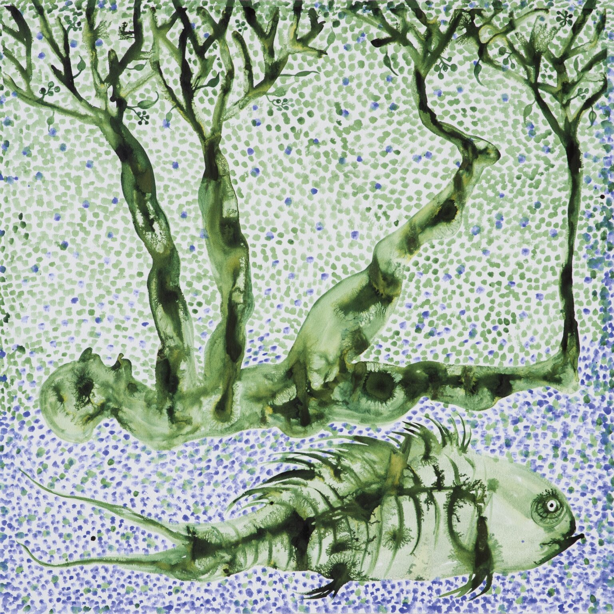
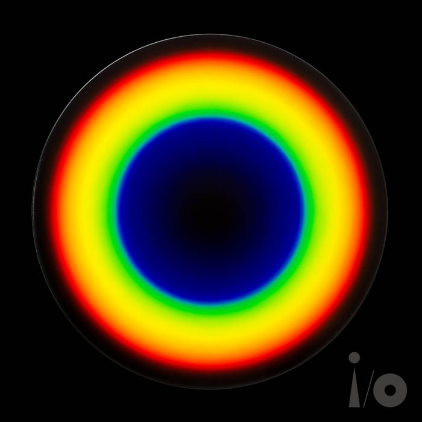
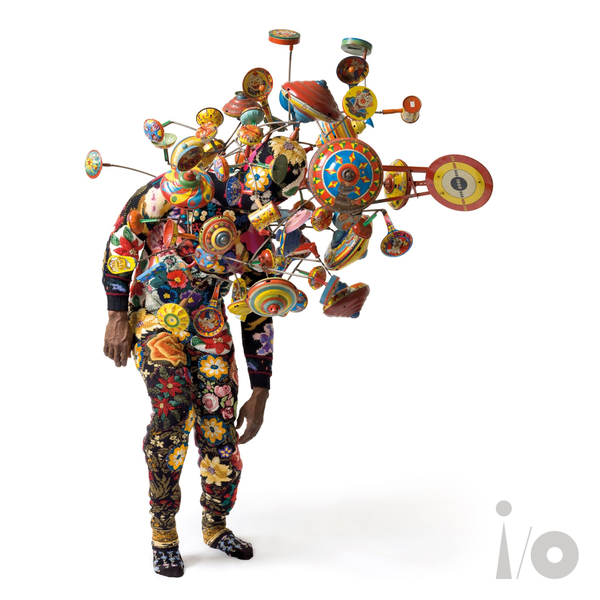
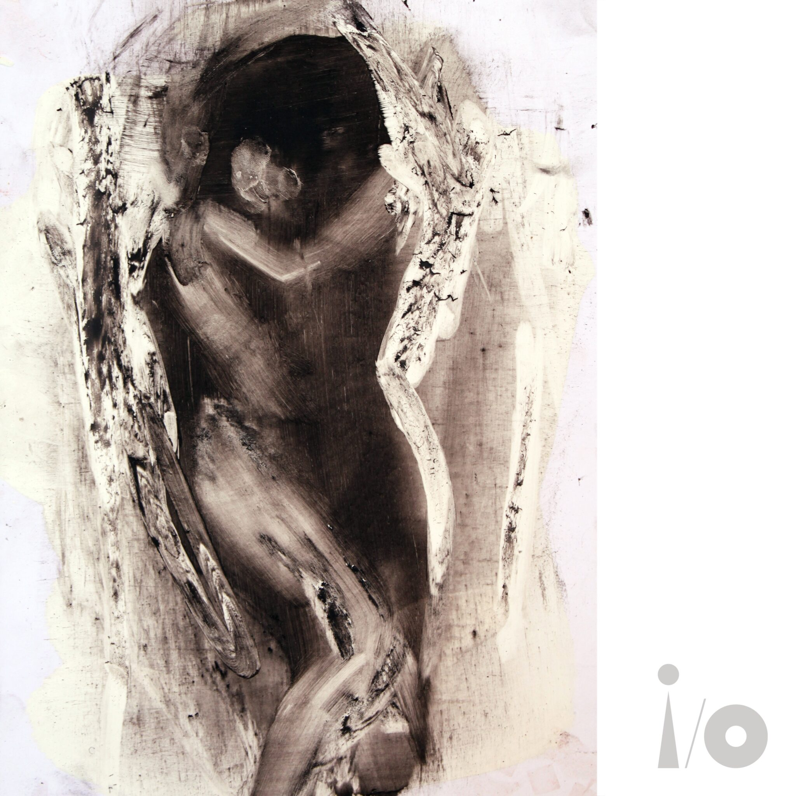
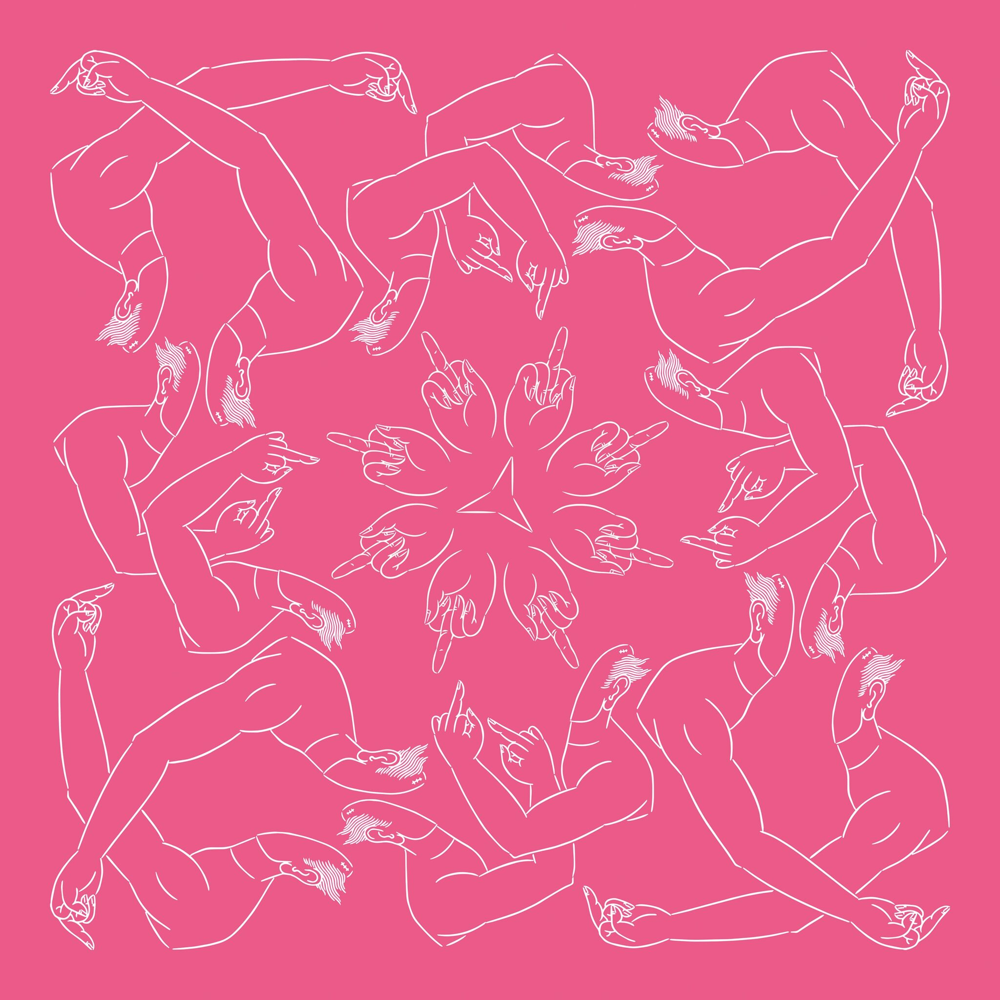

The Five Best Songs from Peter Gabriel's I/O Album
By Keith Rowley
#1: Olive Tree
Olive Tree is overall the best song on the album. It is upbeat, full of juicy textures, and the lyrics allude to the earth and virtual reality. It's a trip!
#2: I/O
I/O is the title track, and a classic Peter Gabriel alt-pop jammer.
#3: Live and Let Live
Live and Let Live is the closing track. It begins with some hallucinogenic audio textures, reminiscent of the beginning of the closing track of Phil Collins' first album, "Tomorrow Never Knows." The song then gradually builds and builds to an all-out party, with Youssou N'dour wailing ala "In Your Eyes" and everybody onstage dancing. Another cool jammer.
#4: Love Can Heal
Love Can Heal is a gorgeous, dreamy ballad that makes me cry every time I hear it. I love the soft female backing vocals and the slowly bubbling synths.
#5: Road to Joy
Road to Joy is mainly just fun! It's about a person who has locked-in syndrome, in which, even though they're fully conscious, they cannot move a muscle, nor even communicate. Then one day the people around this person find a way to unlock them, and -- boom! They're back in the world, feeling it all, like brand new. Happiness embodied!
Also, I love middle-finger-to-the-people-in-power artwork by Ai Weiwei.
Resources
Images
- Olive Tree
- Artist: Barthélémy Toguo; Title: Chroniques avec la Nature
- I/O
- Artist: Olafur Eliasson; Title: Colour experiment no. 114, 2022
- Live and Let Live
- Artist: Nick Cave; Title: Soundsuit
- Love Can Heal
- Artist: Antony Micallef; Title: a small painting of what I think love looks like
- Road to Joy
- Artist: Ai Weiwei; Title: Middle Finger in Pink
Fonts
- Headings
- Bebas Neue, via Google Fonts
- Body
- Montserrat, via Google Fonts